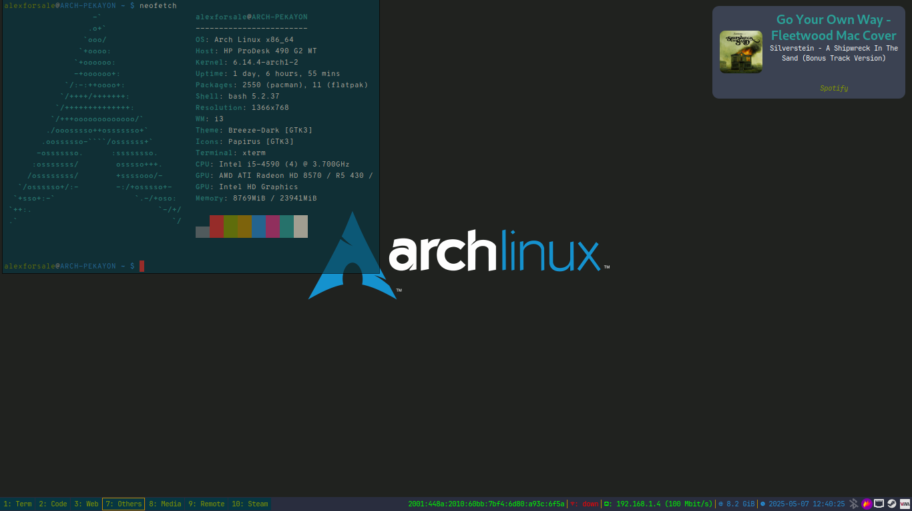

My Collection of dotfiles in one place!
Table of Contents
The Dotfiles
This is my personal dotfiles repository. All submodules (and also this repository) is meant to be stowed (a method of symbolic linking). For now each submodule is pointed to their respective main branch.
Perhaps the other feature of this repository (and also all the submodules) is github pages generation automated using actions, see the .github/workflows/publish.yml file on each repository for more detail.
Submodules
Common Shell Initialization

{kind=link}
Figure 1: my .profile
For all the common POSIX-compliant shells (if you're using a common modern GNU/Linux distribution, chances are the system shells is POSIX-compliant). I've tested this with various GNU/Linux distributions, and also some BSD distributions. This repository contains the necessary environment variables needed are loaded when I logged in. I've also incorporate this for GNU Guix, but guix is forever changing, and I'm not currently use it for my daily distro.
- source code: https://github.com/alexforsale/dotfiles-shells/
bash

{kind=link}
Figure 2: bash version
The second repository I stowed on every machines that using bash. I actually have configuration for most of the other shells (including fish), but bash is always my favorite.
- source code: https://github.com/alexforsale/dotfiles-bash/
fish

{kind=link}
Figure 3: alacritty running fish
Not my main shell, only when I want to feel like a zsh user without using oh-my-zsh.
- source code: https://github.com/alexforsale/dotfiles-fish/
Tmux

{kind=link}
Figure 4: replace Emacs with vim, and it's literally my only way of using tmux
tmux is a terminal multiplexer. It lets you switch easily between several programs in one terminal, detach them (they keep running in the background) and reattach them to a different terminal1. This is handy when I'm connecting to a remote machine via ssh, and starting tmux in the remote. This way, even if my connection is suddenly interrupted or lost I can simply reconnect the ssh, and reattach my previous tmux session.
- source code: https://github.com/alexforsale/dotfiles-tmux/
Xorg Configuration

For my machine that doesn't work well with wayland. To be fair, Xorg is kinda convoluted, so I have settings for machines that uses a display manager, and also for one that only uses xinit.
- source code: https://github.com/alexforsale/dotfiles-x/
i3

The first window manager I installed whenever I needed a graphical environment.
{kind=link}
Figure 5: i3wm workspace
- source code: https://github.com/alexforsale/dotfiles-i3/
Hyprland


Figure 6: Hyprland
Another window manager that I really like, a bit resource intensive but the really pleases me. Updated frequently, so really need to check their wiki whenever an update breaks my configuration.
- source code: https://github.com/alexforsale/dotfiles-hyprland/
Rofi


Figure 7: rofi
A window switcher, application launcher and dmenu replacement.
- source code: https://github.com/alexforsale/dotfiles-rofi/
Dunst

 Lightweight and customizable notification daemon.
- source code: https://github.com/alexforsale/dotfiles-dunst/
Conky

Figure 8: conky system monitor
a system monitor software for the X Window System, Wayland and other things, too. It is available for GNU/Linux and FreeBSD. It is free software released under the terms of the GPL license. Conky is able to monitor many system variables including CPU, memory, swap, disk space, temperature, top, upload, download, system messages, and much more. It is extremely configurable.
- source code: https://github.com/alexforsale/dotfiles-conky/
Wallpapers
{kind=link}
Figure 9: wallpapers
Various wallpapers I found over the internet. The only repository not on github.
How to install
First question is: why? The second is: Do you use Emacs? All the source code for my dotfiles and also this readme is written in org-mode, and needs to be tangled from each org-mode file in order to generate the code. After that, I use GNU stow for symbolic-linking each configuration to the actual location (usually in ~/.config/ or ~/.local/). So it's really not a straight forward process.